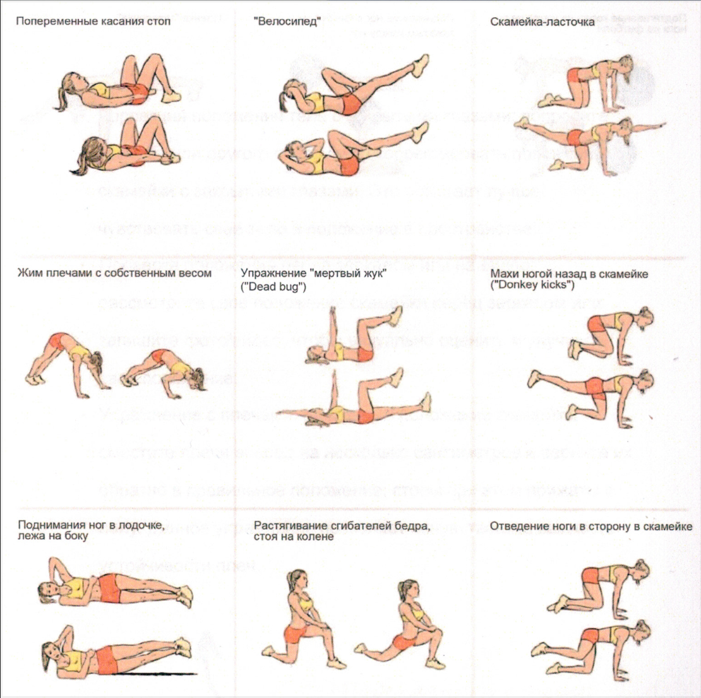
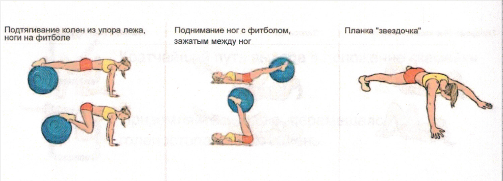

СКАМЕЙКА

Нажмите на фото, чтобы увеличить
Наиболее важно тренировать
- Устойчивость верхней части туловища
- Умение руками и ногами следовать движениям лошади
Подсказка тренеру
Вы также можете использовать это в качестве списка для самопроверки. Нужно ли улучшить какой-либо аспект?
Биомеханика
Вольтижер начинает из седа лицом вперед. Из этого положения ноги слегка приподнимаются в замах, а затем обе отводятся назад, чтобы приземлиться голеностопами на крестец лошади. Затем, сгибая колени, следует плавное движение в позицию скамейки.
В этом положении ноги плотно прилегают к лошади параллельно ее позвоночнику, а стопы направлены назад. Колени и бедра согнуты примерно на 90 градусов. Возьмитесь руками за ручки так, чтобы плечи находились на одной прямой с ручками, а локти были направлены назад. Плечи и бедра должны находиться на одной высоте.
Завершая упражнение, вольтижер одновременно вытягивает обе ноги и плавно переходит обратно в положение седа лицом вперед.
Самопроверка
- Кратчайший путь выхода в положение скамейки
- Приземляйтесь мягко, перемещаясь с голеностопа на всю голень
- Для поддержания правильной позы очень важно, чтобы ваши плечи располагались прямо над кистями рук, а локти были прижаты к телу
- Убедитесь, что ваши бедра расположены прямо над коленями, а голени параллельны позвоночнику лошади
- Ваша спина должна быть почти прямой, а мышцы живота должны быть достаточно напряжены
- Чтобы поддерживать правильную позу, важно держать голову прямо, а шею полностью вытянутой
Развитие силы


Занятия на земле
- Коррекция положения тела с закрытыми глазами: попросите тренера или другого спотсмена скорректировать положение скамейки с закрытыми глазами. Это помогает лучше чувствовать свое тело и положение в пространстве.
- Проверка положения перед зеркалом или на видео: рассмотрите свое положение скамейки перед зеркалом или запишите фото/видео, чтобы визуально оценить и улучшить свое положение.
- Упражнение с плечами: находясь в положении скамейки, сместите плечи вперед на несколько сантиметров и верните их обратно в правильное положение, стопы при этом прижаты к полу. Данное упражнение позволяет почувствовать важность устойчивости плеч.
Занятия на земле
- Упражнение с коленями: находясь в скамейке, слегка приподнимите колени и затем верните их в исходную позицию. Данное упражнение развивает чувство равновесия и контроль положения скамейки.
- Уменьшение количества точек опоры: удерживая скамейку, на мгновение уберите одну руку или ногу, сохраняя правильную позицию. Начните с небольших изменений, следя за тем, чтобы вольтижер сохранял правильную скамейку.
- Упражнение "скамейка" в группе: расположите спортсменов в круг или в ряд, каждый должен занять правильное положение скамейки. Затем один человек перепрыгивает через каждого по очереди и встает в "скамейку", после чего другой спортсмен выполняет роль прыгуна. Это упражнение может быть увлекательным и сложным, развивая координацию и ловкость в команде.
Занятия на макете и лошади
- Упражнение с плечами: находясь в положении скамейки, сместите плечи вперед на несколько сантиметров и верните их обратно в правильное положение, стопы при этом прижаты к полу. Данное упражнение позволяет почувствовать важность устойчивости плеч.
- Упражнение с коленями: находясь в скамейке, слегка приподнимите колени вперед и затем верните их в исходную позицию. Данное упражнение развивает чувство равновесия и контроль положения скамейки.
- Уменьшение количества точек опоры: удерживая скамейку, на мгновение уберите одну руку или ногу, сохраняя правильную позицию. Начните с небольших изменений, следя за тем, чтобы вольтижер сохранял положение правильной скамейки. Это упражнение повышает устойчивость и контроль в положении скамейка.
Занятия на макете и лошади
- "Скамейка" с опущенной ногой: удерживая "скамейку", уберите одну ногу, убедившись, что остальное тело сохраняет правильную позицию. Это упражнение развивает равновесие и мышечную силу.
- "Скамейка" во время смены аллюра: сохраняйте положение "скамейки", пока лошадь переходит с одного аллюра на другой (например, с шага на рысь). Данное упражнение требует от спортсмена приспосабливаться к изменениям в движении лошади, при этом сохраняя правильную позу, что повышает адаптационные способности и силу мышц спины спортсмена.